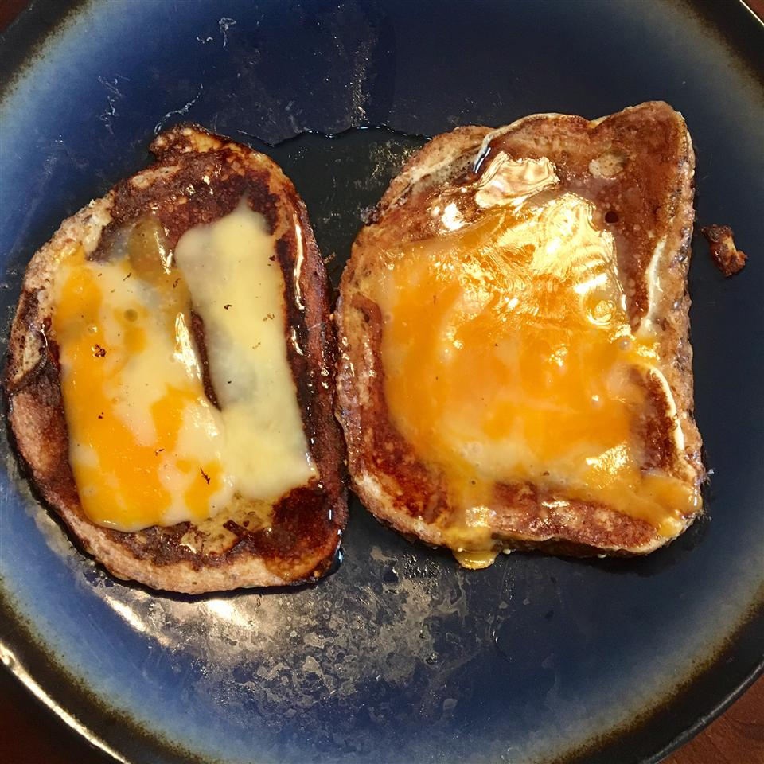

German French Toast

"I know it sounds weird, but you have to taste it!"
Created by user Allison on allrecipes,
this is a surefire way to make you go visit your cardiologist.
Ingredients
- 1 teaspoon butter
- 2 eggs
- 1/2 cups milk
- 8 slices white bread
- 8 slices Muenster cheese
Steps
- Melt butter in a skillet over medium heat. In a shallow bowl, beat together eggs and milk.
- Dip bread slices one at a time in egg mixture, and fry in butter until golden. After turning once, top with a slice of muenster cheese, and cover until cheese is melted.